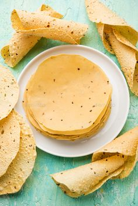

.jpeg)
Urad Flour
Discover the essence of traditional Indian cuisine with our Urad Flour. Crafted from high-quality urad dal (black gram), this fine flour ensures the softest and fluffiest dosas and idlis. Its versatility and nutritional value make it a kitchen staple, allowing you to create a wide array of mouthwatering delicacies.
Price: Rs.150 Weight: 1Kg
Product List
-
.jpg)
A crispy and savory papad made from nagli (finger millet) flour.
Rs. 200 -
.jpg)
Also known as vermicelli, made from wheat or rice flour. Used to prepare various sweet and savory dishes, a beloved ingredient in Indian kitchens.
Rs. 180 -
.jpg)
Thin and light papads made from rice flour. Perfect for a quick and tasty snack, ideal for all occasions.
Rs. 200 -
.jpg)
Crispy papad made from moong dal (split green gram) paste. A popular choice for its light and delectable taste.
Rs. 200 -
.jpg)
A specialty snack from Maharashtra, made from rice flour and spices. Enjoyed for its unique shape, crispiness, and irresistible taste.
Rs. 200 -

A traditional papad made from urad dal (black gram) paste. Sun-dried to perfection, resulting in a crispy and delectable snack.
Rs.150 -

Ground red chillies used to add spice and color to various dishes.
Rs.150 -
.jpeg)
A vibrant yellow spice known for its medicinal properties and warm flavor.
Rs.150 -
.jpeg)
Finely ground moong dal (split green gram) used in Indian sweets and snacks.
Rs.150 -

A staple ingredient in Indian cooking, used to make chapatis, parathas, and more.
Rs.150 -
.jpeg)
Flour made from bajra (pearl millet) grains, popular in Indian cuisine.
Rs.150 -
.jpeg)
Finely ground urad dal used in various Indian recipes.
Rs.150